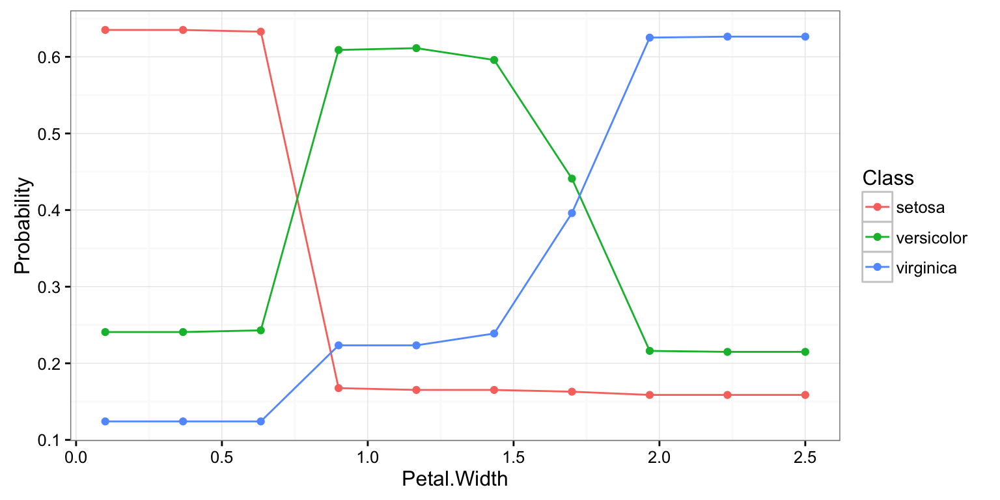
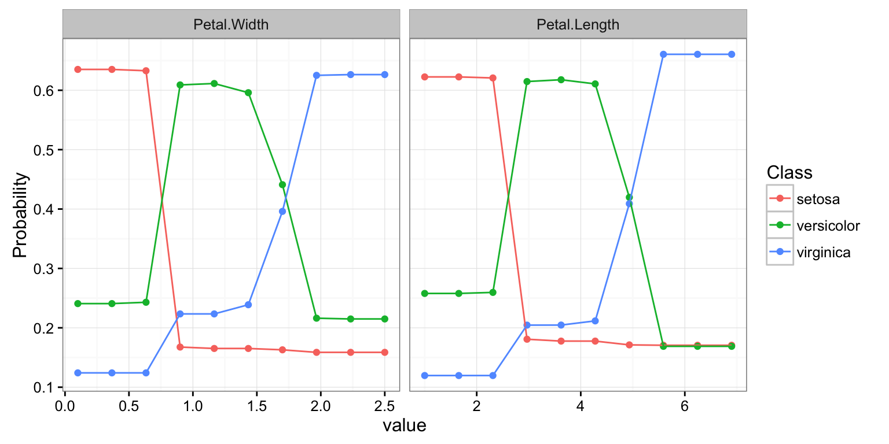
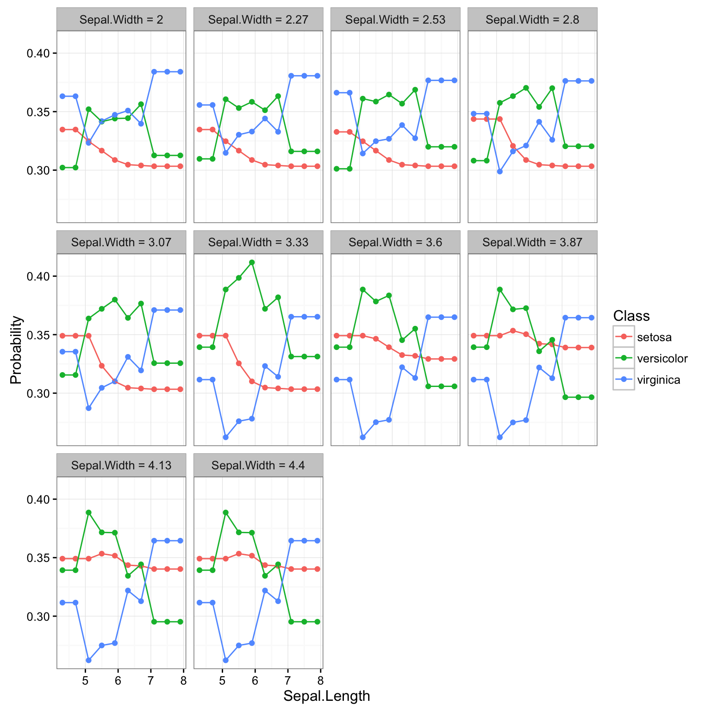
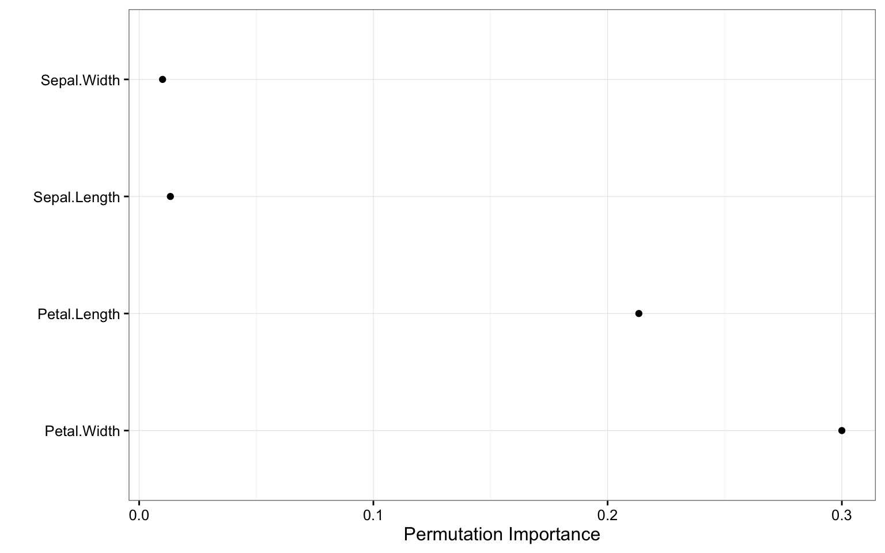
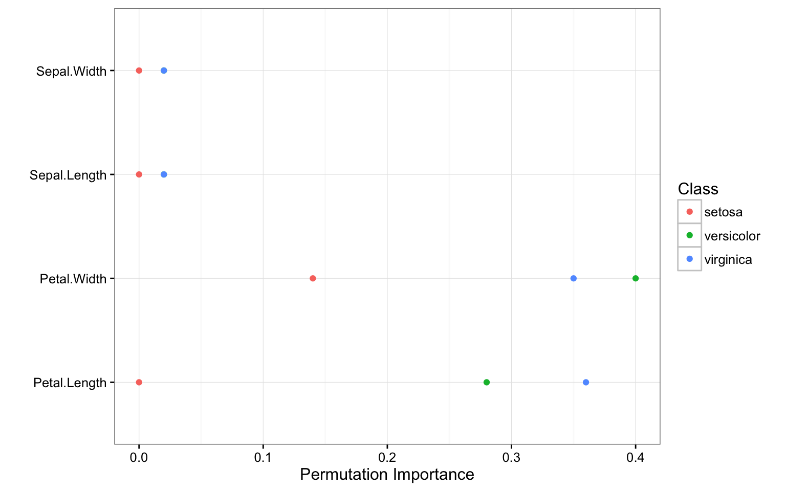
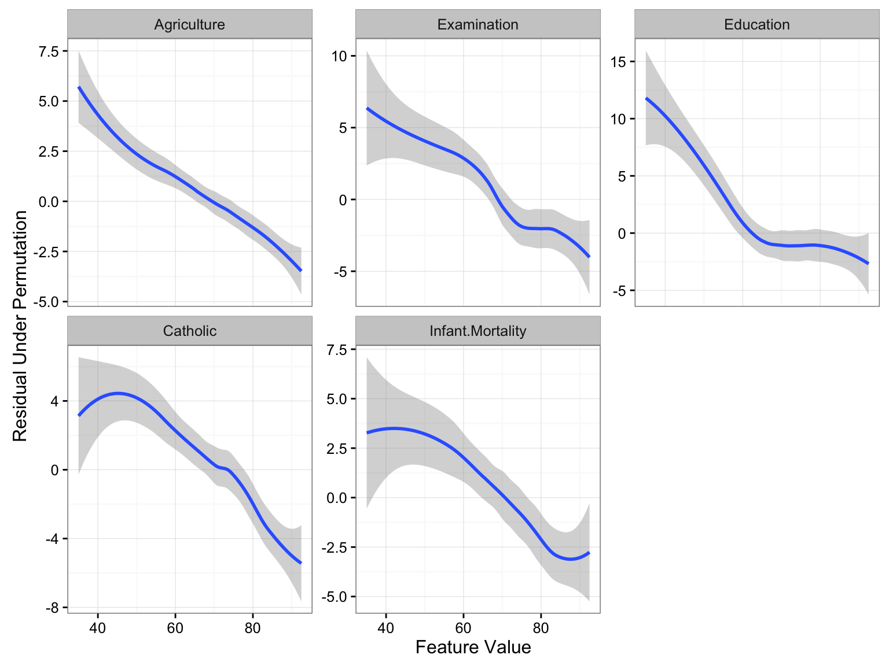
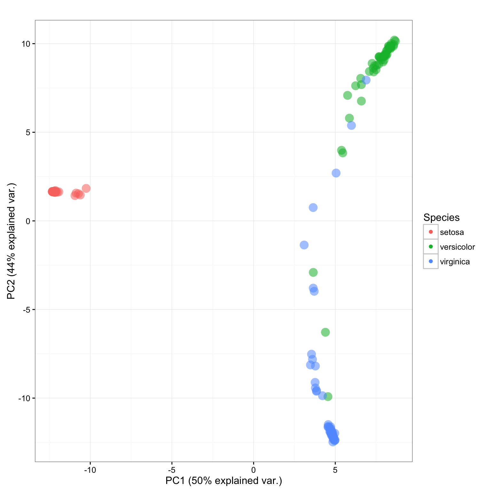
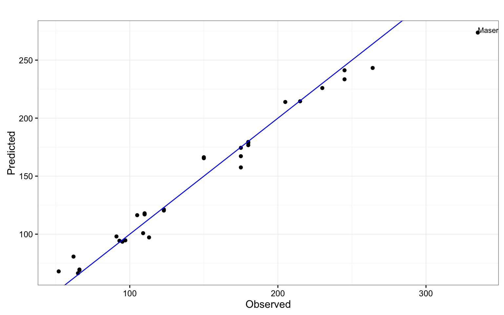

This package allows you to compute the partial dependence of an arbitrarily large set of covariates, compute local, aggregate, and class-specific variable importance, and case/observation-level distance between data points given a fitted random forest from the following packages (outcome variable types supported in parenthesis): party (multivariate, regression, and classification), randomForestSRC (regression, classification, and survival), and randomForest (regression and classification).
The function partial_dependence outputs a data.frame of class pd. By default all of the supported random forest classifiers will return predictions on the response scale, in this case class labels. However, we can use the type argument to instead return class probabilities, in this case the proportion of times a particular observation was classified as belonging to a certain class across all trees in the forest.
The var argument is a character vector which gives the features for which the partial dependence is desired.
library(edarf)
data(iris)
library(randomForest)
fit <- randomForest(Species ~ ., iris)
pd <- partial_dependence(fit, data = iris, var = "Petal.Width")
print(pd)## setosa versicolor virginica Petal.Width
## 1 0.6350933 0.2407733 0.1241333 0.1000000
## 2 0.6350933 0.2407733 0.1241333 0.3666667
## 3 0.6328533 0.2430133 0.1241333 0.6333333
## 4 0.1676000 0.6089867 0.2234133 0.9000000
## 5 0.1652267 0.6113600 0.2234133 1.1666667
## 6 0.1652133 0.5959200 0.2388667 1.4333333
## 7 0.1629467 0.4410133 0.3960400 1.7000000
## 8 0.1587067 0.2162000 0.6250933 1.9666667
## 9 0.1587067 0.2149200 0.6263733 2.2333333
## 10 0.1587067 0.2149200 0.6263733 2.5000000The number of output rows is controlled by cutoff, which by default is 10. This controls the number of points in the prediction grid that are evaluated. That is, the number of unique values of the variable indicated by the var argument for which the partial dependence of the learned function is evaluated.
Output from partial_dependence can be visualized using plot_pd, which uses ggplot2 to create simple but (hopefully) effective visualizations. In this simple case a line plot.
plot_pd(pd)
partial_dependence can be run in parallel by registering the appropriate parallel backend using doParallel.
The partial_dependence method can also either return interactions (the partial dependence on unique combinations of a subset of the feature space) or a list of bivariate partial dependence estimates (when multiple features are specified in var but interaction = FALSE).
pd_list <- partial_dependence(fit, data = iris, c("Petal.Width", "Petal.Length"), interaction = FALSE)
plot_pd(pd_list)
pd_int <- partial_dependence(fit, data = iris, c("Sepal.Length", "Sepal.Width"), interaction = TRUE)
plot_pd(pd_int, facet = "Sepal.Width")
When an interaction is computed the facet argument is used to construct plots wheren the feature not set to be the facet is shown conditional on a particular value of the facet feature. This works best when said feature is an integer or a factor.
variable_importance can be used to compute the local, joint, or aggregate permutation importance of covariates. A particular covariate, or covariates, as specified by the var parameter, are randomly shuffled, and predictions are computed. Aggregate variable importance is the mean difference between the unpermuted predictions and the predictions made when the covariates specified in var are permuted.
imp <- variable_importance(fit, var = colnames(iris)[-5],
type = "aggregate", nperm = 2, data = iris)
plot_imp(imp)
If type = "local" instead the differences between the permuted predictions and the unpermuted predictions are averaged for each data point, rather than over all of the sample data. For classification problems this allows us ot compute a class specific measure of variable importance.
imp_class <- variable_importance(fit, var = colnames(iris)[-5],
type = "local", nperm = 2, data = iris)
plot_imp(imp_class)
In the case of a continuous outcome variable this importance measure can be smoothed to show the importance of the covariate(s) to different points in the distribution of the outcome variable.
fit <- randomForest(Fertility ~ ., data = swiss, proximity = TRUE)
imp_local <- variable_importance(fit, var = colnames(swiss)[-1], type = "local",
data = swiss)
plot_imp(imp_local)
If multiple variables are passed to the var argument and interaction = TRUE then the difference in the error induced by permuting all the variables in var, versus the error induced by permuting each element of var separately, is computed.
extract_proximity extracts or computes a matrix which gives the co-occurence of data points in the terminal nodes of the trees in the fitted random forest. This can be used to visualize the distance between data points in the model.
This matrix is too large to be visualized. plot_prox takes a principal components decomposition of this matrix using prcomp, and plots it using a biplot. Additional arguments allow other covariates to be mapped onto the size of the points, their color (shown), or their shape.
fit <- randomForest(Species ~ ., iris, proximity = TRUE)
prox <- extract_proximity(fit)
pca <- prcomp(prox, scale = TRUE)
plot_prox(pca, color = iris$Species, color_label = "Species", size = 2)
The function plot_pred makes plots of predictions versus observations and has the additional feature of being able to “tag” outliers, and assign them labels.
fit <- randomForest(hp ~ ., mtcars)
pred <- predict(fit, newdata = mtcars, OOB = TRUE)
plot_pred(pred, mtcars$hp,
outlier_idx = which(abs(pred - mtcars$hp) > .5 * sd(mtcars$hp)),
labs = row.names(mtcars))